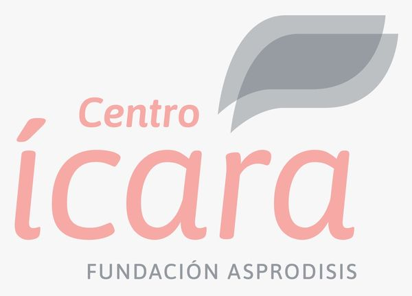

Centro Ícara · Fundación ASPRODISIS
FRANÇAIS
Charte des droits et des devoirs
Familles
Si l’audio ne démarre pas automatiquement, appuyez sur le bouton.
← Centro Ícara
Si l’audio ne démarre pas automatiquement, appuyez sur le bouton.
← Centro Ícara